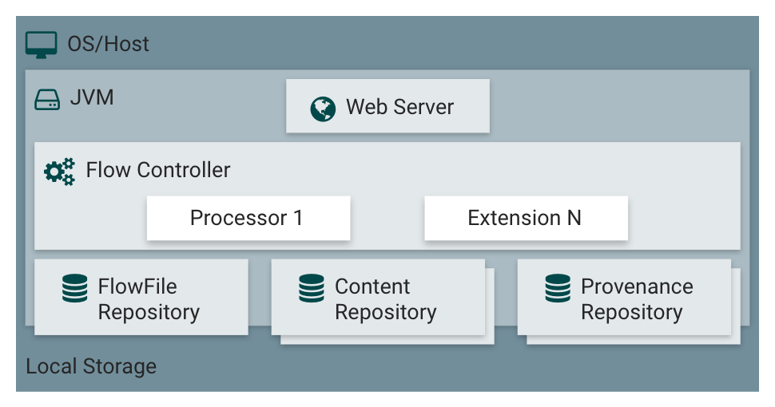
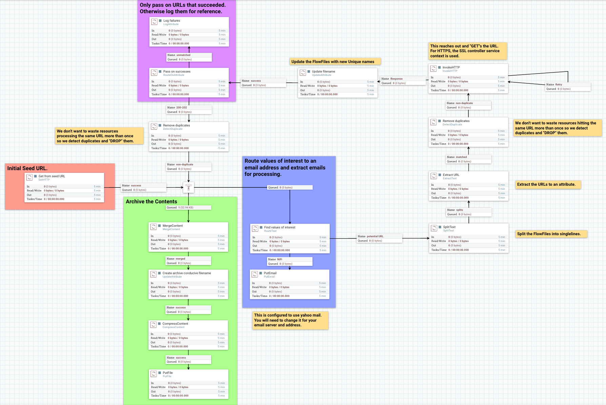
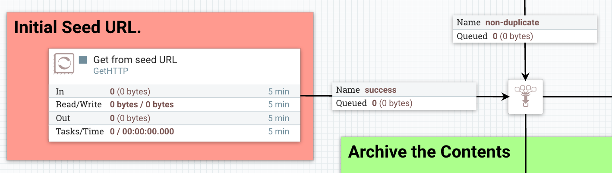
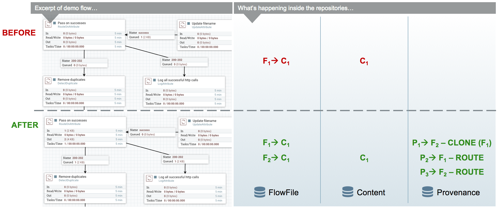
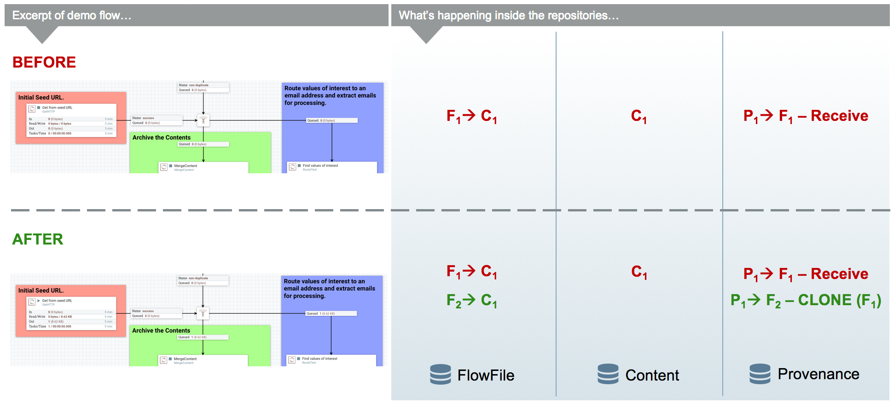
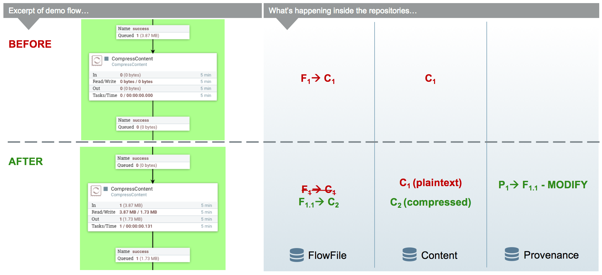
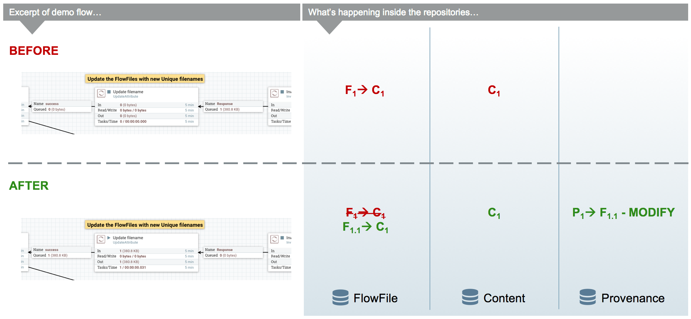

제품정보
이 고급 수준 문서는 NiFi의 구현 및 설계 결정에 대한 심층적 인 모습을 제공하는 것입니다. 독자는 NiFi의 기본을 알고 다른 문서의 충분히 읽었습니다.
FlowFiles는 NiFi의 심장과 흐름 기반 디자인입니다. FlowFile은 콘텐츠(payload) 및 속성에 대한 포인터로 구성되는 데이터 레코드이며, 1개 이상의 검증된 이벤트와 관련되어 있습니다. 속성은 FlowFile 파일명과 같은 FlowFile의 메타데이터 역할을 하는 키/값 쌍입니다. 이 콘텐츠는 실제 데이터 또는 파일의 페이로드입니다. Provenance는 FlowFile에 일어난 내용입니다. 이 부속의 각각에는 저장을 위한 그것의 자신의 저장소 (repo)가 있습니다.
저장소의 한 가지 주요 측면은 불균형입니다. FlowFile Repository 내에서 Content Repository 및 data에 대한 내용은 immutable입니다. 변경이 FlowFile의 속성에 발생하면, 속성의 새로운 사본은 메모리에 생성되어 디스크에 지속됩니다. Content가 주어진 FlowFile을 위해 변경 될 때, 원래 내용이 읽기, 변환을 통해 스트림, 새로운 스트림에 기록. 그런 다음 FlowFile의 콘텐츠 포인터는 디스크의 새로운 위치로 업데이트됩니다. 결과적으로 FlowFile 콘텐츠 저장에 대한 기본 접근은 immutable versioned content store라고 할 수 있습니다. 이의 장점은 다음과 같습니다 : 처리의 전형적인 복잡한 그래프에 필요한 저장 공간의 실질적인 감소, 자연 재생 기능, OS 캐싱의 장점을 가지고, 임의 읽기 / 쓰기 성능을 감소, 그리고 이상 이유가 쉽습니다. 이전 개정은 'nifi.properties' 파일에서 설정된 아카이브 속성에 따라 유지되며 NiFi 시스템 관리자의 가이드.
회사연혁
NiFi에 의해 활용되는 세 가지 저장소가 있습니다. 각 OS/Host의 파일 시스템 내에서 존재하며 특정 기능을 제공합니다. FlowFiles를 완전히 이해하기 위해 아래 시스템에서 사용하는 방법은 이러한 저장소에 대해 알고 중요한 것입니다. 모든 3개의 저장소는 NiFi가 persist 데이터에 사용됩니다.
-
FlowFile Repository는 흐름에 있는 모든 현재 FlowFiles를 위한 메타데이터를 포함합니다.
-
Content Repository는 현재와 과거 FlowFiles에 대한 내용을 보유하고 있습니다.
-
Provenance Repository는 FlowFiles의 역사를 보유하고 있습니다.

FlowFile 저장소
시스템에 의해 적극적으로 처리되는 FlowFiles는 JVM 메모리의 해시 맵에서 개최됩니다 (더 많은 것에 대해 Deeper View: 메모리 및 Disk에서 FlowFiles). 이것은 그(것)들을 가공하기 위하여 아주 능률적으로 만듭니다, 그러나 힘 손실, 커널 panics, 체계 향상 및 정비 주기와 같은 이유의 수 때문에 과정 재시작의 맞은편에 자료의 내구성을 제공하는 이차 기계장치를 요구합니다. FlowFile 저장소는 현재 시스템에 존재하는 FlowFiles의 메타데이터의 "Write-Ahead Log"(또는 데이터 레코드)입니다. 이 FlowFile 메타데이터에는 FlowFile과 관련된 모든 속성이 포함되어 있으며, FlowFile의 실제 콘텐츠에 대한 포인터(Content Repo에 존재하는) 및 FlowFile의 상태와 같은 FlowFile의 상태는 FlowFile이 속합니다. 이 쓰기 머리 로그는 NiFi를 제공합니다. 재 탄력성 그것은 재시작 및 예상치 못한 시스템 실패를 처리해야합니다.
FlowFile Repository는 NiFi의 Write-Ahead Log로 작동하므로 FlowFiles가 시스템을 통해 흐르는 것처럼 각 변경은 FlowFile Repository에 로그인하여 작업의 거래 단위로 발생합니다. 노드가 데이터를 처리할 때 정확히 어떤 단계인지 알 수 있습니다. 노드가 데이터를 처리하는 동안 내려가는 경우, 재시작시 쉽게 재시작할 수 있습니다. (더 심층적 인 시스템의 효과는 트랜잭션에 실패). 로그의 FlowFiles의 형식은 길에 따라 일어난 일련의 deltas (또는 변경)입니다. NiFi는 FlowFile의 "snapshot"을 복원하여 FlowFile을 복구합니다 (Repository가 체크 포인트 인 경우 생성) 다음이 deltas의 각 재생.
스냅샷은 각 FlowFile의 새로운 스냅샷을 생성하는 시스템에서 주기적으로 자동으로 촬영됩니다. 이 시스템은 해시 맵의 각 FlowFile을 직렬화하여 새로운 기본 체크 포인트를 준수하고 파일 이름 ".partial"으로 디스크에 쓰기. 체크포인트 진행으로, 새로운 FlowFile 기본은 ".partial" 파일에 기록됩니다. 체크포인트가 오래된 "snapshot"파일이 삭제되고 ".partial"파일은 "snapshot"로 이름을 붙입니다.
시스템 체크 포인트 사이의 기간은 'nifi.properties' 파일에서 설정할 수 있습니다 (documented in a NiFi 시스템 관리자의 가이드). 기본값은 2분 간격입니다.
시스템의 효과는 트랜잭션에 실패
NiFi는 각각의 FlowFile Repo에서 각 노드에서 일어나는 기록을 유지함으로써 하드웨어 및 시스템 실패에 대해 보호합니다. 위에서 언급했듯이 FlowFile Repo는 NiFi의 Write-Ahead Log입니다. 노드가 온라인에 돌아올 때, "snapshot"과 ".partial"파일을 첫번째 검사하여 상태를 복원합니다. 노드는 "snapshot"을 수락하고 ".partial"을 삭제하거나 ".partial"파일이 존재하지 않는 경우 "snapshot"파일을 "snapshot"파일로 변경합니다.
Node가 다운되었을 때 쓰는 내용의 중간에 있었을 경우, 아무것도 손상되지 않습니다, 쓰기 (아래에 언급) 및 Immutability (위에 언급) 패러다임 덕분에. FlowFile 트랜잭션이 원래 내용(내용 포인터에 의해 지정)을 수정하지 않고, 원본은 안전합니다. NiFi가 내려갈 때, 변화에 대한 쓰기 주장은 나판되고 배경 쓰레기 수집에 의해 정리됩니다. 마지막으로 알려진 안정 상태에 "rollback"을 제공합니다.
Node는 FlowFile의 상태를 복원합니다. 더 심도, 공정의 단계별 설명, 참조 NiFi의 쓰기 머리 로그 구현.
이 설정, 작업의 거래 단위의 관점에서, NiFi는 adversity의 얼굴에 매우 탄력을 허용, 심지어 NiFi가 갑자기 죽을 경우, 그것은 데이터의 손실없이 다시 픽업 할 수 있습니다.
Deeper View: 메모리 및 Disk에서 FlowFiles
용어 "FlowFile"는 약간의 오노머입니다. 이것은 각 FlowFile이 디스크에 파일에 대응하는 것을 믿기 위해 하나가 리드하지만 사실이 아닙니다. FlowFile 속성이 존재하는 두 가지 주요 위치가 있으며, 위에서 설명한 Write-Ahead Log와 작업 메모리의 해시 맵이 있습니다. 이 해시 맵은 FlowFiles의 모든 참조가 유동적으로 사용됩니다. 이 맵에 의해 참조 된 객체는 프로세서에 의해 사용되며 연결 큐에 보관됩니다. FlowFile 객체가 메모리에 보관되어 있기 때문에, FlowFile을 얻기 위해 프로세서를 수행해야 할 모든 것은 ProcessSession을 요청하는 것입니다.
변경이 FlowFile에 발생하면 delta는 Write-Ahead Log로 작성되며 메모리의 객체는 이에 따라 수정됩니다. 이 시스템은 FlowFiles로 신속하게 작동 할 수 있으며 어떤 일이 발생하고 세션이 진행될 때 발생할 수 있습니다. 이것은 매우 견고하고 내구성있는 시스템을 제공합니다.
또한 "swapping" FlowFiles의 표기가 있습니다. 연결 queue의 FlowFiles 수가 "nifi.queue.swap.threshold" 속성에서 설정된 값을 초과하면 발생합니다. 연결 큐의 가장 낮은 우선 순위를 가진 FlowFiles는 10,000의 배치에서 "스왑 파일"에 디스크에 직렬화되고 쓰입니다. 이 FlowFiles는 위에서 언급한 해시 맵에서 제거되고 연결 큐는 메모리로 파일을 다시 교환 할 때 determining의 책임에 있습니다. FlowFiles가 swapped 때 FlowFile repo가 표기되지 않고 swap 파일 목록을 유지한다. 시스템은 스냅 샷을 체크포인트 할 때 파일 교환 섹션이 포함되어 있습니다. 파일이 뒤로 묶을 때 FlowFiles가 해시 맵으로 다시 추가됩니다. 이 스왑 기술, 대부분의 운영 체제에서 수행 한 스왑처럼, NiFi는 여전히 시스템의 메모리를 depleting 없이 FlowFiles의 수백만을 허용하면서도 효과적으로 처리되는 FlowFiles에 매우 빠른 액세스를 제공 할 수 있습니다.
콘텐츠 저장소
Content Repository는 단순히 모든 FlowFiles의 내용이 존재하고 일반적으로 3 저장소의 가장 큰 로컬 저장소에 위치합니다. introductory 섹션에서 언급했듯이, 이 저장소는 속도와 스레드 안전성을 극대화하기 위해 immutability 및 copy-on-write paradigms를 사용합니다. Content Repo에 영향을 미치는 핵심 설계 결정은 디스크의 FlowFile의 콘텐츠를 잡고 필요한 경우 JVM 메모리로만 읽습니다. NiFi를 사용하면 생산자와 소비자 프로세서가 메모리의 전체 개체를 파악하지 않고 작고 거대한 크기의 개체를 처리 할 수 있습니다. 결과적으로, 분할과 같은 행동, 집계, 그리고 매우 큰 개체를 변환하는 것은 매우 쉬운 기억을 해치지 않고.
JVM Heap은 공간이 필요로 할 때 쓰레기 수집 공정을 가지고, NiFi의 전용 실이 사용되지 않는 콘텐츠 (더 많은 정보 " Deeper View: Deletion After Checkpointing"섹션)를 분석하기 위해 NiFi의 전용 실이 존재합니다. FlowFile의 내용이 더 이상 사용되지 않기 때문에 삭제되거나 보관됩니다. 아카이브가 'nifi.properties'에서 활성화되면 FlowFile의 콘텐츠는 콘텐츠 재포에 존재할 것입니다. (일부로 삭제) 또는 콘텐츠 재포로 인해 너무 많은 공간. 아카이브 및 / 또는 삭제에 대한 조건은 'nifi.properties' 파일 ("nifi.content.repository.archive.max.retention.period", "nifi.content.repository.max.usage.percentage")에서 구성되며 NiFi 시스템 관리자의 가이드. 내용의 삭제에 대한 자세한 내용은 "Data Egress"섹션을 참조하십시오.
Deeper View: 콘텐츠 클레임
일반적으로 FlowFile에 대해 이야기 할 때, 내용에 대한 참조는 단순히 내용에 "포인트"라고 할 수 있습니다. FlowFile Content Reference의 구현은 복잡성의 여러 레이어를 가지고 있습니다. Content Repository는 디스크에 파일의 수집을 구성합니다. 이 파일은 컨테이너 및 섹션으로 묶습니다. A 단면도는 콘테이너의 subdirectory입니다. 컨테이너는 Content Repository의 "root directory"로 생각할 수 있습니다. 내용 저장소는, 그러나, 많은 콘테이너로 위로 만들 수 있습니다. NiFi는 병렬에서 여러 물리적 파티션을 활용할 수 있도록 합니다. NiFi는 다음과 같이 읽고, 쓰기 할 수 있으며, 병렬의 모든 디스크, Megabytes의 수백 또는 단일 노드의 디스크 처리량의 초당 Gigabytes의 데이터 속도를 달성하기 위해. "Resource Claims"는 디스크에 특정 파일을 점하는 Java 객체입니다 (이 파일 ID의 트랙을 유지함으로써 수행되며, 이 섹션은 파일에 있으며 컨테이너 섹션은 부분입니다).
FlowFile의 내용을 추적하려면 FlowFile에는 "Content Claim" 객체가 있습니다. 이 콘텐츠 클레임에는 콘텐츠가 포함 된 Resource Claim에 대한 참조가 있으며, 파일의 내용의 오프셋 및 내용의 길이가 있습니다. 콘텐츠에 액세스하려면 Resource Claim의 속성을 사용하여 디스크에 특정 파일을 사용하여 콘텐츠 저장소 드릴을 선택하고 파일에서 콘텐츠를 스트리밍하기 전에 Resource Claim에 의해 지정된 오프셋을 찾습니다.
요약 (Resource Claim)의이 층은 모든 FlowFile의 내용에 대한 디스크에 파일이 없다는 것을 수행했습니다. immutability의 개념은 이것에게 가능한 열쇠입니다. 내용이 한 번 변경되지 않았기 때문에 ("문서 작성"은 변경을 만들기 위해 사용됩니다), FlowFile 변경 내용이 있으면 메모리 또는 이동 데이터의 파편이 없습니다. 디스크에 단일 파일을 사용하여 많은 FlowFiles의 콘텐츠를 보유 할 수 있습니다. NiFi는 디스크에 의해 제공 된 최대 데이터 속도에 접근 할 수 있습니다.
Provenance 저장소
Provenance Repository는 각 FlowFile의 역사가 저장됩니다. 이 역사는 자료의 각 조각의 Data Lineage (일컬어 Custody의 사슬)를 제공하기 위하여 이용됩니다. 이벤트가 FlowFile (FlowFile이 생성 된, 위조, 복제, 수정 등)에 대한 새로운 검증 이벤트가 생성됩니다. 이 입증 된 이벤트는 FlowFile의 스냅 샷으로 그 시점에 존재하는 흐름에 맞습니다. 입증 된 이벤트가 생성되면 FlowFile의 속성과 FlowFile의 콘텐츠에 대한 포인터를 복사하고 FlowFile의 상태 (다른 검증된 이벤트와 같은 관계)와 Provenance Repo의 한 위치에 복사합니다. 이 스냅 샷은 만료 된 데이터의 예외로 변경되지 않습니다. Provenance Repository는 'nifi.properties' 파일에 명시된대로 완료된 시간 동안 이러한 입증 된 이벤트를 모두 보유하고 있습니다.
FlowFile 속성과 콘텐츠에 대한 포인터는 Provenance Repository에 보관되어 있기 때문에 Dataflow Manager는 선량 또는 처리 역사를 볼 수 없습니다. 데이터의 그 조각은 나중에 데이터를보고 흐름에 어떤 시점에서 데이터를 재생할 수 있습니다. 이를 위한 일반적인 사용 케이스는 특정한 다운스트림 체계가 자료를받지 않는 주장할 때 입니다. 데이터 회선은 데이터가 다운스트림 시스템에 전달되었을 때 정확하게 표시 할 수 있으며, 데이터는 다음과 같습니다. 파일명 및 데이터가 전송 된 URL - 또는 데이터가 실제로 전송되지 않았는지 확인할 수 있습니다. 이 경우, 전송 이벤트는 해당 특정 다운스트림 시스템에만 데이터를 다시 보내기 위해 적절한 HTTP API 엔드포인트에 액세스하여 버튼의 클릭으로 다시 재생할 수 있습니다. 또는 데이터가 제대로 처리되지 않은 경우 (데이터 조작이 먼저 발생해야 일부 데이터 조작이 발생), 흐름이 고정 될 수 있으며, 데이터는 데이터를 올바르게 처리하기 위해 새로운 흐름으로 재생 될 수 있습니다.
Provenance가 Content Repo에서 콘텐츠를 복사하지 않고 FlowFile의 포인터를 컨텐츠로 복사하여 삭제되는 검증된 이벤트 전에 콘텐츠를 삭제할 수 있습니다. 이것은 사용자가 더 이상 콘텐츠를 볼 수 없거나 나중에 FlowFile을 재생할 수 없다는 것을 의미한다. 그러나 사용자는 여전히 FlowFile의 선량을 볼 수 있으며 데이터에 무슨 일이 있었는지 이해합니다. 예를 들어, 데이터 자체가 접근 할 수없는 경우에도 사용자는 여전히 데이터의 고유 식별자를 볼 수 있습니다, 그 파일 이름 (해당되는 경우), 수신 된 경우, 그것이 조작 된 방법, 전송 된 경우, 등. 또한 FlowFile의 속성이 사용할 수 있기 때문에 Dataflow Manager는 데이터가 어떻게 처리되었는지 이해하고 데이터 흐름을 디버깅하는 데 중요한 도구를 제공하는 방법을 이해 할 수 있습니다.
| 입증 된 이벤트는 현재 흐름에 존재하는 FlowFile의 스냅 샷이므로 흐름의 변화가 나중에 입증 된 이벤트를 재생하는 능력에 영향을 미칠 수 있습니다. 예를 들어, 연결이 흐름에서 삭제되는 경우, 데이터는 흐름의 점에서 재생할 수 없습니다. 이제 처리에 대한 데이터를 수신 할 수 없습니다. |
Provenance Repository 체크 아웃 뒤에 디자인 결정에 대해 Persistent 입증 저장소 디자인.
Deeper View: 검증 로그 파일
각 검증된 이벤트에는 두 개의 맵이 있으며, 이벤트 전에 속성 중 하나이며, 업데이트된 속성 값에 대해 하나가 있습니다. 일반적으로 입증 된 이벤트는 이벤트가 방출 될 때 존재하는 것처럼 속성의 업데이트 된 값을 저장하지 않지만 대신 세션이 투입 될 때 속성 값입니다. 이 이벤트는 세션이 진행될 때까지 캐시되고 저장되며 세션이 진행될 때 FlowFile과 관련된 속성과 함께 이벤트를 진행합니다. 이 규칙에 대한 예외는 "SEND"이벤트이며, 이벤트가 방출되었을 때 존재하는 것처럼 속성을 포함합니다. 이것은 속성이 스스로 전송되었기 때문에 수행된다, 그것은 정확하게 정보를 전송하는 정확한 계정이 중요하다.
NiFi가 실행되고, 16의 검증 로그 파일의 롤링 그룹이 있습니다. 입증 된 이벤트는 16 파일 중 하나에 기록됩니다 (이러한 처리량 증가에 여러 파일이 있습니다). 로그 파일은 주기적으로 (기본 시간대는 매 30 초입니다). 이것은 새로 만들어진 검증 이벤트가 16 로그 파일의 새로운 그룹에 쓰기 시작하고 원본은 장기 저장을 위해 처리됩니다. 첫 번째 로그가 하나의 파일로 병합됩니다. 그런 다음 파일은 선택적으로 압축됩니다 ( "nifi.provenance.repository.compress.on.rollover" 속성에 의해 결정). 마지막으로 이벤트는 Lucene을 사용하고 쿼리 할 수 있습니다. 인덱스를 위한 이 배치된 접근법은 입증된 사건은 조회를 위해 즉시 유효하지 않습니다 그러나 거래와 색인을 붙이기 때문에 이 극적으로 증가 성과는 아주 비쌉니다.
별도의 스레드는 입증 된 로그의 삭제를 처리합니다. 두 가지 조건 관리자는 입증 로그의 삭제를 제어하기 위해 설정할 수 있습니다 디스크 공간의 최대 금액이며 로그에 대한 최대 보존 기간. 스레드는 마지막 수정 날짜에 의해 재포를 정렬하고 조건 중 하나가 초과 될 때 가장 오래된 파일을 삭제합니다.
Provenance Repo는 여러 shards로 부서지는 Lucene 인덱스입니다. 이것은 여러 가지 이유로 수행됩니다. 첫째, Lucene은 문서 식별자를 위해 32 비트 정수를 사용하므로 sharding없이 Lucene에서 지원하는 문서의 최대 수는 제한됩니다. 둘째, 각 샤드의 시간 범위를 알고 있다면 여러 스레드로 쉽게 검색 할 수 있습니다. 또한,이 sharding은 또한 더 효율적인 삭제를 허용합니다. NiFi는 shard의 모든 이벤트가 디스크에서 전체 shard를 삭제하기 전에 삭제 예정될 때까지 기다립니다. 이것은 우리가 삭제할 때 Lucene 색인을 업데이트하지 않아도됩니다.
일반 저장소 노트
다수 육체적인 저장 점
Provenance 및 Content repos의 경우 여러 물리적 파티션에 대한 정보를 스트립 할 수있는 옵션이 있습니다. 관리자는 여러 디스크의 읽기 및 쓰기를 federate하고 싶었다면 이것을 할 것입니다. Repo (Content or Provenance)는 여전히 하나의 논리 저장소이지만, 쓰기는 시스템에 의해 여러 볼륨 / 부분에서 자동으로 스트립됩니다. 감독은 'nifi.properties' 파일에 지정됩니다.
좋은 연습
FlowFile의 내용을 분석하기 위해 가장 좋은 연습으로 간주되며, FlowFile의 속성에 내용에서 키 정보를 추출하는 대신 몇 번으로 FlowFile의 내용을 분석하고, FlowFile 속성에서 정보를 읽기/쓰기합니다. 이 하나의 예는 FlowFile Content에서 텍스트를 추출하는 ExtractText 프로세서이며 속성이므로 다른 프로세서를 사용할 수 있습니다. FlowFile의 전체 내용을 지속적으로 처리하는 것보다 훨씬 더 나은 성능을 제공합니다. 속성은 메모리에 보관되어 FlowFile 저장소를 업데이트하는 것은 콘텐츠 저장소를 업데이트하는 것보다 훨씬 더 빠릅니다. 각각의 데이터에 저장 된 금액이 주어진.
FlowFile의 생활
repos가 서로 상호 작용하는 방법을 더 잘 이해하기 위해, NiFi의 underlying 기능, FlowFile의 삶; 이 다음 섹션은 실제 흐름의 다른 지점에서 FlowFile의 예를 포함 할 것입니다. "WebCrawler"라고 불리는 흐름은 다음과 같습니다. 웹 크롤러.json.
높은 수준에서, 이 흐름은 InvokeHTTP 프로세서에서 구성 된 씨앗 URL에 도달, 씨 URL에서 얻고, 다음 RouteText 프로세서를 사용하여 응답을 분석하여 키워드 (이 경우 "nifi"), 잠재적 인 URL을 찾을 수 있습니다. 그런 다음 InvokeHTTP는 원래 씨앗 웹 페이지에서 발견 된 URL을 사용하여 HTTP Get 요청을 실행합니다. 응답은 상태 코드 속성을 기반으로하며 200-202 상태 코드 만 분석을위한 원래 RouteText 프로세서로 다시 경로를 지정합니다.
흐름도 중복 URL을 감지하고 다시 처리 방지, 키워드가 발견 될 때 사용자의 이메일, 모든 성공적인 HTTP 요청을 로그, 및 디스크에 압축 및 아카이브 될 성공적인 요청을 번들.
| 이 흐름을 사용하려면 몇 가지 옵션을 구성해야합니다. MapCacheServer 컨트롤러 서비스는 기본 속성으로 추가되어야 합니다. 또한 이메일을 얻기 위해 PutEmail 프로세서는 이메일 자격 증명으로 구성해야합니다. 마지막으로 StandardSSLContextService를 사용하려면 적절한 키와 신뢰 매장으로 구성해야 합니다. Truststore가 웹 사이트에 작업하기 위해 적절한 인증서 권한으로 구성되어야한다는 것을 기억하십시오. 아래 명령은 myTrustStore라는 신뢰할 저장소에 기본 Java CA를 추가하기 위해 "keytool" 명령을 사용하는 예입니다. keytool -importkeystore -srckeystore /Library/Java/JavaVirtualMachines/jdk/Contents/Home/jre/lib/security/cacerts -destkeystore myTrustStore |
WebCrawler 흐름

| 웹 크롤링의 임의 성격으로 인해 InvokeHttp 프로세서에 나타나는 "Connection timed out"과 같은 메시지가있는 게시판에 대한 금지가 없습니다. |
데이터 진입
FlowFile은 ProvenanceReporter에 적합한 통화로 "ProcessSession.create()"를 호출할 때 시스템에서 생성됩니다. "ProcessSession.create()" 호출은 몇 가지 핵심 속성 (표준 프로세스 세션에 대한 파일 이름, 경로 및 uuid)을 가진 빈 FlowFile을 생성하지만 부모에게 어떤 내용이나 선량없이 (생체 FlowFiles에 대한 매개 변수를 허용하는 방법). 프로듀서 프로세서는 FlowFile에 내용과 속성을 추가합니다.
ProvenanceReporter는 FlowFile의 Provenance 이벤트를 방출하는 데 사용됩니다. 파일이 외부 기관에 의해 수신되지 않은 데이터에서 NiFi에 의해 생성되면 "CREATE"이벤트가 방출되어야합니다. 대신 데이터가 외부 소스에서 수신 한 데이터에서 생성 된 경우 "RECEIVE" 이벤트가 방출되어야합니다. Provenance 이벤트는 각각 "ProvenanceReporter.create()"과 "ProvenanceReporter.receive()"를 사용합니다.
WebCrawler 흐름에서 InvokeHTTP 프로세서인 InvokeHTTP 프로세서는 "ProcessSession.create()"을 사용하여 초기 FlowFile을 생성하고 "ProvenanceReporter.receive()"을 사용하여 데이터를 수신합니다. 이 메소드 호출은 데이터가 수신 된 URL을 제공, 얼마나 긴 전송 데이터를 가지고, FlowFile에 추가 된 FlowFile 속성. HTTP 헤더, 예를 들어, FlowFile 속성으로 추가 할 수 있습니다.

자주 묻는 질문
유량 기반 프로그래밍의 중요한 측면은 검은 상자 사이의 자원 기반 관계의 아이디어입니다. NiFi에서 각각 큐 및 프로세서입니다. FlowFiles는 FlowFile ( "Claim Check" 패턴 EIP)에 대한 참조를 전달하여 queues를 통해 하나의 프로세서에서 다른 경로로 변환됩니다.
WebCrawler 흐름에서 InvokeHTTP 프로세서는 HTTP GET 요청으로 URL에 도달하고 HTTP 서버에서 어떤 응답이 있었는지에 따라 FlowFile에 상태 코드 속성을 추가합니다. FlowFile의 파일 이름을 업데이트 한 후 (InvokeHttp 후 UpdateAttribute 프로세서에서)는 FlowFiles를 성공적으로 진행하는 RouteOnAttribute 프로세서가 두 개의 다른 프로세서에 있습니다. 일치하지 않는 사람은 RouteOnAttribute 프로세서에 의해 "DROPPED"(데이터 Egress 섹션 참조), Auto-Terminate에 설정되어 라우팅 규칙과 일치하지 않는 모든 데이터. RouteOnAttribute 프로세서에 연결하면 FlowFile (F1)이 있으며 상태 코드 속성과 내용 (C1)에 포인트가 포함되어 있습니다. C1 포인트의 입증 된 이벤트가 있으며 F1의 스냅 샷을 포함하지만 라우팅에 더 나은 초점을 맞 춥니 다. 이 정보는 각각 FlowFile, Content 및 Provenance Repos에 있습니다.
RouteOnAttribute 프로세서가 FlowFile의 상태 코드 속성을 검사한 후 두 개의 다른 위치로 경로를 결정합니다. 일어나는 첫번째 것은 가공업자는 FlowFile가 F2를 창조하기 위하여 복제합니다. 이 모든 속성과 포인터의 내용을 복사합니다. 속성을 분석하고 분석하기 때문에 내용이 변경되지 않습니다. FlowFiles는 다음 처리에 대한 검색을 위해 다음 프로세서를 기다립니다.
ProvenanceReporter 문서는 CLONE 및 2 ROUTE 이벤트를 포함하는 변경 사항입니다. 이 이벤트의 각에는 관련 내용에 대한 포인터가 있으며 스냅 샷 형태로 각각의 FlowFiles의 사본이 포함되어 있습니다.

확장된 Routing 사용 케이스
속성에 근거를 둔 FlowFiles를 routing 이외에, 내용에 근거를 둔 몇몇 가공업자도 노선. FlowFile의 콘텐츠를 여러 FlowFiles로 나눌 수 있기 때문에 효율적이지 않습니다.
하나의 예제는 SplitText 프로세서입니다. 이 프로세서는 엔드 라인 문자를 찾고 새로운 FlowFiles를 구성할 수 있습니다. Web Crawler Flow는 URL 추출의 단일 라인으로 잠재적 인 URL을 분할하고 InvokeHttp에 대한 요청으로 행동합니다. SplitText 프로세서의 한 가지 이점은 프로세서가 연속적인 펑크를 나누기 때문에 (flowFile content is disjoint or overlapping) 프로세서는 모든 콘텐츠를 복사하지 않고이 라우팅을 할 수 있습니다. 모든 그것은 새로운 FlowFiles, 원래 FlowFile의 내용의 섹션에 포인터와 함께. NiFi API에 내장 된 콘텐츠 demarcation 및 분할 시설에 의해 가능합니다. 항상 이 방식으로 분할 할 수없는 동안 성능 혜택을 고려할 때.
RouteText는 routing의 특정 스타일에 필요한 내용을 복사하는 이유를 보여주는 프로세서입니다. 이 프로세서는 각 선을 분석하고 구성 속성을 기반으로 한 하나 이상의 관계로 변환합니다. 1 개 이상의 라인이 동일한 관계로 경로를 얻을 때 (같은 입력 FlowFile의 경우), 그 라인은 하나의 FlowFile과 결합됩니다. 라인이 해체 될 수 있기 때문에 (같은 관계에 1 및 100 노선을 선으로) 하나의 포인터는 정확하게 FlowFile의 내용을 설명 할 수 없습니다, 프로세서는 새로운 위치에 내용을 복사해야합니다. 예를 들어, Web Crawler 유량에서 RouteText 프로세서는 "NiFi"관계에 "nifi"를 포함 한 모든 라인이 있습니다. 그래서 웹 페이지에 "nifi" 여러 번이있는 하나의 입력 FlowFile이있을 때, 하나의 이메일 만 전송됩니다 (후속 PutEmail 프로세서를 통해).
회사 소개
funnel은 한 개 이상의 연결에서 입력하고 한 개 이상의 목적지로 이동합니다. 사용자 가이드에 설명된 일반적인 사용 케이스. 사용 케이스에 관계없이, 깔때기에서 하나의 프로세서 다운스트림이 있다면, 깔때기로 방출되는 입증된 이벤트가 없으며, 복수 그래프에서 보이지 않는 것으로 보인다. WebCrawler 중 하나와 같은 여러 다운스트림 프로세서가 있다면 클론 이벤트가 발생합니다. 아래 그래픽을 참조하면 새로운 FlowFile (F2)가 원래 FlowFile (F1)에서 복제되고, 위의 Routing과 마찬가지로 새로운 FlowFile은 동일한 내용으로 포인터가 있습니다 (내용은 복사되지 않습니다).
개발자 관점에서 Funnel을 매우 간단한 프로세서로 볼 수 있습니다. 실행 예정될 때, 단순히 "ProcessSession.get()"과 "ProcessSession.transfer()"을 출력 연결으로 합니다. 1개 이상의 출력 연결이 있는 경우 (예를 들면 같이) 그런 다음 "ProcessSession.clone()"가 실행됩니다. 마지막으로 "ProcessSession.commit()"는 트랜잭션을 완료합니다.

본문 바로가기
이전 예에서 FlowFile의 내용에 대해서만 routing 하지만 변경하지 않았습니다. 이 다음 예제는 분석 된 웹 페이지가 포함 된 FlowFiles의 번들을 압축하는 CompressContent 프로세서에 초점을 맞추고 있습니다.
이 예제에서 FlowFile F1의 내용 C1은 CompressContent 프로세서에서 압축됩니다. C1는 immutable이기 때문에 우리는 우리가 C1를 겹쳐 쌓일 수 없는 가득 차있는 재생 가능한 입증 역사를 원합니다. "modify" C1에 우리는 "쓰기 사본"을 수행하여 콘텐츠를 수정하여 콘텐츠 저장소 내에서 새로운 위치로 복사합니다. 이렇게 할 때 FlowFile 참고 F1는 새로운 압축 내용 C2에 점으로 업데이트되며 새로운 수익 이벤트 P2는 새로운 FlowFile F1.1을 참조합니다. FlowFile repo가 immutable이기 때문에 이전 F1을 수정하는 대신 새로운 delta (F1.1)이 생성됩니다. 이전에 입증 된 이벤트는 여전히 Content C1에 포인터가 있고 오래된 속성을 포함하지만 FlowFile의 최신 버전이 아닙니다.
| 글쓰기 이벤트에 대한 사본에 초점을 맞추는 술의 경우, FlowFile의 (F1)의 입증 된 이벤트는이 시점에 올라갑니다. |

쓰기 사용 케이스에 확장 된 복사
글쓰기의 독특한 사례는 MergeContent 프로세서입니다. 모든 프로세서에 대해 한 번에 하나의 FlowFile을 사용합니다. MergeContent 가공업자는 다수 FlowFiles에서 가지고 가고 그(것)들을 하나로 결합합니다. 현재 MergeContent는 여러 가지 Merge Strategies를 가지고 있지만 모두 입력 FlowFiles의 내용을 새로운 합병 위치에 복사해야합니다. MergeContent가 끝난 후, 주어진 부모가 새로운 Child FlowFile을 만들기 위해 함께 결합 된 것을 설정하는 "JOIN" 유형의 입증 된 이벤트를 방출합니다.
관련 기사
FlowFile의 속성과 작업은 NiFi의 핵심 측면입니다. 속성이 충분히 작을 것으로 가정됩니다 로컬 메모리에 완전히 읽을 때마다 프로세서가 실행합니다. 그래서 그들은 쉽게 일을하는 것이 중요합니다. 속성은 routing의 핵심 방법이며 FlowFile을 처리하는 것은 FlowFile의 속성을 변경하는 프로세서가 매우 일반적입니다. 그런 예는 UpdateAttribute 프로세서입니다. 모든 UpdateAttribute 프로세서는 프로세서의 속성에 따라 들어오는 FlowFile의 속성을 변경합니다.
다이어그램을 살펴보면, 프로세서가 FlowFile (F1)이 있기 때문에 속성과 포인트가 콘텐츠 (C1)에 있습니다. 프로세서는 FlowFile의 속성을 업데이트하여 새로운 delta (F1.1)를 생성하여 콘텐츠 (C1)에 포인터가 있습니다. “ATTRIBUTES MODIFIED” 검증된 이벤트는 이런 일이 일어날 때 방출됩니다.
이 예에서, 이전 프로세서 (InvokeHTTP) URL에서 정보를 fetched 및 요청 FlowFile과 같은 파일 이름 속성과 새로운 응답 FlowFile을 만들었습니다. 이것은 응답 FlowFile을 설명하는 데 도움이되지 않습니다, 그래서 UpdateAttribute 프로세서는 더 관련 (URL 및 거래 ID) 무언가에 파일 이름을 지정합니다.
| ATTRIBUTES MODIFIED 이벤트에 중점을 둔 술은 FlowFile의 (F1)의 입증 된 이벤트가 올랐습니다. |

데이터 Egress
NiFi의 Eventually 자료는 다른 체계로 적재된 점에 도달할 것입니다, 우리는 그것을 처리할 수 있습니다, 또는 우리는 FlowFile를 밖으로 거르고 결정한 우리는 그것에 관하여 더 긴 배려를 결정했습니다. 어느 방법, FlowFile은 결국 "DROPPED"일 것입니다. "DROP"는 우리가 더 이상 흐름에 FlowFile을 처리하지 않는 입증 된 이벤트이며, deletion에 사용할 수 있습니다. 다음 저장소 체크포인트까지 FlowFile Repository에 남아 있습니다. Provenance Repository는 'nifi.properties' (기본은 24 시간)에 명시된 시간의 양에 대한 입증 이벤트를 유지합니다. Content Repo의 내용은 FlowFile이 NiFi를 나타낸 후, Writing-Ahead Log의 백그라운드 체크포인트 처리가 압축/제거되었습니다. 즉, 다른 FlowFile은 동일한 내용을 참조하거나 아카이브가 'nifi.properties'에서 활성화되면 안됩니다. 아카이브가 활성화되면, 콘텐츠는 디스크의 최대 비율이 도달되거나 최대 보존 기간이 도달될 때까지 존재합니다 (또한 'nifi.properties').
Deeper View: 체크포인트 후 삭제
| 이 섹션은 위의 "Deeper View: Content Claim" 섹션에서 정보를 크게 의존합니다. |
".partial"파일이 저장 메커니즘과 동기화되어 새로운 스냅 샷 ( FlowFile Repo 섹션에서 상세)이 FlowFile Repo에 콜백이 모든 오래된 콘텐츠 청구를 해제하기 위해 (이 항목이 잘못되었는지 확인 후 수행됩니다). FlowFile Repo는 Content Claims가 Resource Claim Manager를 릴리즈할 수 있는 것을 알고 있습니다. Resource Claim Manager는 릴리즈 된 모든 콘텐츠 주장의 추적을 유지하고 리소스 주장은 삭제 될 준비가되어 있습니다 ( 자원 청구는 흐름에 더 이상 참조 할 때 삭제 될 준비가되어 있습니다).
주기적으로, Content Repo는 Resource Claim Manager를 요청합니다. Content Repo는 Resource Claims가 아카이브되거나 삭제되는지 여부를 결정합니다 (nifi.content.repository.archive.enabled의 값에 따라). 아카이브가 비활성화되면 파일이 디스크에서 삭제됩니다. 그렇지 않으면, 아카이브가 삭제 될 때 배경 스레드 실행 (위의 조건에 따라). 이 배경 스레드는 10,000 가장 오래된 내용 주장의 목록을 유지하고 필요한 임계 값의 아래까지 삭제합니다. 콘텐츠가 실행되면 목록을 다시 팝업하는 가장 오래된 콘텐츠에 대한 재포를 스캔합니다. Java heap utilization 및 Disk I/O utilization의 측면에서 효율적 인 모델을 제공합니다.
관련 자료
Provenance Repository의 기능 중 하나는 순차적으로 발생하는 이벤트에 효율적인 액세스를 허용하는 것입니다. NiFi Reporting Task는 이러한 이벤트를 통해 그것을 사용 할 수 있으며 외부 서비스에 보냅니다. 다른 시스템은 또한이 외부 시스템에 이벤트의 유사한 유형을 전송하는 경우, 그것은 정보의 다른 조각과 NiFi FlowFile을 연관시키는 데 필요한 수 있습니다. 예를 들어, GetSFTP가 데이터를 검색하는 데 사용되는 경우, NiFi는 고유의 UUID를 사용하여 FlowFile을 나타냅니다. 그러나, 파일명에 의해 언급 된 파일을 배치하는 시스템 인 경우, NiFi는 이러한 데이터의 동일한 조각임을 나타내는 메커니즘이 있어야합니다. 이것은 ProvenanceReporter.associate() 메소드를 호출하여 FlowFile과 alternate 이름의 UUID를 모두 제공합니다 (파일명은 이 예에서). 데이터의 두 조각이 동일한 흐름 의존 할 수 있다고 결정하기 때문에 DataFlow Manager가이 협회를 만들기 위해 종종 필요합니다. 이 작업을 간단한 방법은 UpdateAttribute 프로세서를 사용하고 "alternate.identifier" 속성을 설정하도록 구성하는 것입니다. 자동적으로 "alternate.identifier" 속성으로 값이 추가되는 것을 사용하여 "associate" 이벤트를 방출합니다.
닫기 Remarks
3개의 저장소와 함께, NiFi는 빠르고, 능률적이고, 강력한 기업 데이터 흐름 플랫폼입니다. 이 문서는 Pluggable 인터페이스의 특정 구현을 덮었습니다. 이 글은 FlowFile Repository, File based Provenance Repository 및 File based Content Repository의 Write-Ahead Log 기반 구현을 포함합니다. 이 구현은 NiFi 기본이지만 필요한 경우, 사용자가 특정 사용 케이스를 충족하기 위해 스스로 작성할 수 있습니다.
희망적으로, 이 문서는 NiFi의 저수준 기능 및 그 뒤에 결정의 더 나은 이해를 받았습니다. 만약 당신이 깊이에 대해 더 설명하고 싶은 무언가가 있다면 또는 당신은 포함되어야한다. Apache NiFi Developer mailing list에 이메일을 보내 주시기 바랍니다 (아파치 모듈 mod js).